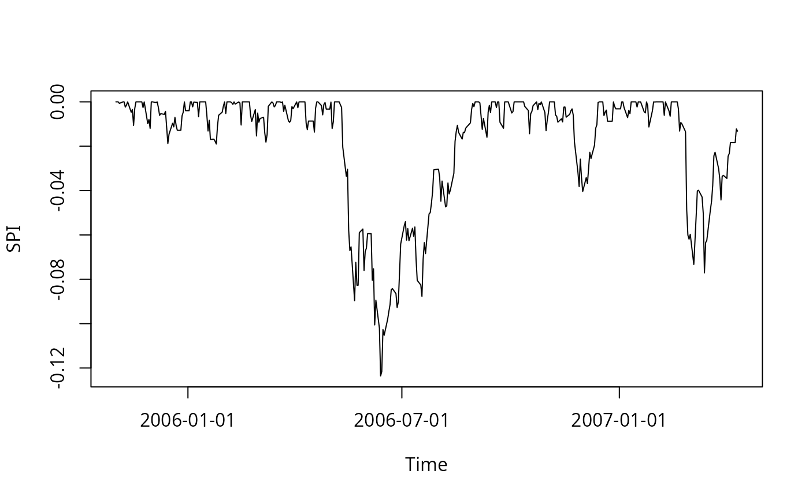
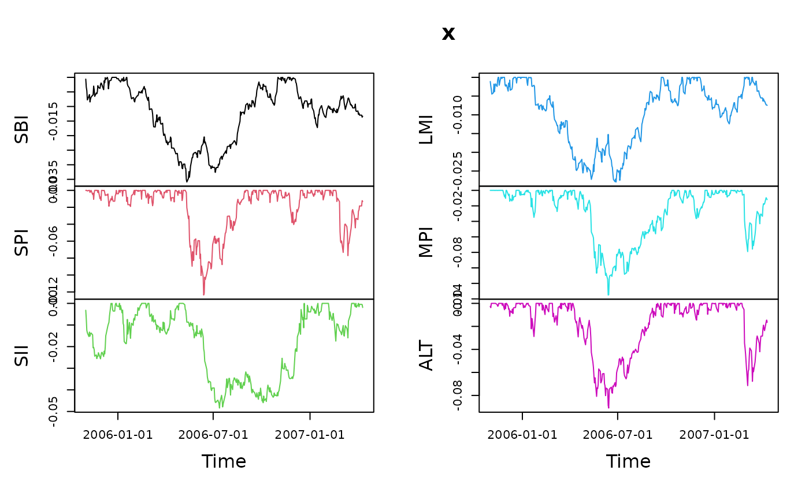

Calculations of drawdowns
fin-drawdowns.RdCompute series of drawdowns from financial returns and calculate drawdown statisitcs.
Arguments
- x
a
"timeSeries"object of financial returns. Note, drawdowns can be calculated from an uni- or multivariate time deries object, statistics can only be computed from an univariate time series object.- ...
optional arguments passed to the function
na.omit.
Value
for drawdowns, an object of class timeSeries.
for drawdownsStats an object of class "data.frame"
with the following entries:
- "drawdown"
the depth of the drawdown,
- "from"
the start date,
- "trough"
the trough period,
- "to"
the end date,
- "length"
the length in number of records,
- "peaktrough"
the peak trough, and
- "recovery"
the recovery length in number of records.
Details
The code in the core of the function drawdownsStats
was borrowed from the package PerformanceAnalytics
authored by Peter Carl and Sankalp Upadhyay.
Author
Peter Carl and Sankalp Upadhyay for code from the contributed
R package PerformanceAnalytics used in the function
drawdownsStats.
Examples
## Use Swiss Pension Fund Data Set of Returns -
head(LPP2005REC)
#> GMT
#> SBI SPI SII LMI MPI
#> 2005-11-01 -0.000612745 0.008414595 -0.003190926 -0.001108882 0.001548062
#> 2005-11-02 -0.002762009 0.002519342 -0.004117638 -0.001175939 0.000342876
#> 2005-11-03 -0.001153092 0.012707292 -0.005209409 -0.000992456 0.010502959
#> 2005-11-04 -0.003235750 -0.000702757 -0.001127165 -0.001198528 0.011679558
#> 2005-11-07 0.001310970 0.006205226 -0.001795839 0.000360366 0.002709618
#> 2005-11-08 0.000539312 0.000329260 0.002103374 0.002327040 0.000346843
#> ALT LPP25 LPP40 LPP60
#> 2005-11-01 -0.002572971 -0.000130008 0.000199980 0.000809672
#> 2005-11-02 -0.001141604 -0.001561421 -0.001120404 -0.000469730
#> 2005-11-03 0.005007442 0.001541418 0.003317548 0.005731589
#> 2005-11-04 0.009482677 0.000439969 0.002421248 0.004838735
#> 2005-11-07 0.004723952 0.001638182 0.002246611 0.003012363
#> 2005-11-08 0.000853619 0.001087309 0.000962708 0.000828043
SPI <- LPP2005REC[, "SPI"]
head(SPI)
#> GMT
#> SPI
#> 2005-11-01 0.008414595
#> 2005-11-02 0.002519342
#> 2005-11-03 0.012707292
#> 2005-11-04 -0.000702757
#> 2005-11-07 0.006205226
#> 2005-11-08 0.000329260
## Plot Drawdowns -
dd = drawdowns(LPP2005REC[, "SPI"], main = "Drawdowns")
plot(dd)

dd = drawdowns(LPP2005REC[, 1:6], main = "Drawdowns")
plot(dd)

## Compute Drawdowns Statistics -
ddStats <- drawdownsStats(SPI)
class(ddStats)
#> [1] "data.frame"
ddStats
#> From Trough To Depth Length ToTrough Recovery
#> 1 2006-05-10 2006-06-13 2006-09-01 -0.123592536 83 25 58
#> 2 2007-02-20 2007-03-14 2007-04-11 -0.077123772 38 17 NA
#> 3 2006-11-08 2006-12-01 2006-12-15 -0.040422201 28 18 10
#> 4 2006-01-17 2006-01-25 2006-02-01 -0.019023057 12 7 5
#> 5 2005-12-07 2005-12-15 2005-12-29 -0.018775316 17 7 10
#> 6 2006-02-23 2006-03-08 2006-03-13 -0.018154802 13 10 3
#> 7 2006-09-05 2006-09-11 2006-09-15 -0.015983414 9 5 4
#> 8 2006-10-13 2006-10-17 2006-10-23 -0.014355088 7 3 4
#> 9 2006-04-11 2006-04-18 2006-04-20 -0.013634341 8 6 2
#> 10 2006-10-30 2006-10-31 2006-11-03 -0.012989432 5 2 3
#> 11 2006-04-24 2006-05-03 2006-05-05 -0.012015385 10 8 2
#> 12 2005-11-28 2005-11-30 2005-12-01 -0.011953779 4 3 1
#> 13 2006-09-22 2006-09-25 2006-09-26 -0.011881605 3 2 1
#> 14 2007-01-25 2007-01-26 2007-01-30 -0.011309666 4 2 2
#> 15 2005-11-14 2005-11-16 2005-11-18 -0.010594974 5 3 2
#> 16 2006-02-14 2006-02-15 2006-02-16 -0.010441790 3 2 1
#> 17 2006-03-23 2006-03-28 2006-04-03 -0.009213964 8 4 4
#> 18 2006-12-19 2006-12-22 2006-12-27 -0.008710829 7 4 3
#> 19 2007-01-05 2007-01-08 2007-01-11 -0.007110905 5 2 3
#> 20 2006-01-05 2006-01-10 2006-01-11 -0.006720460 5 4 1
#> 21 2007-02-12 2007-02-13 2007-02-14 -0.006477943 3 2 1
#> 22 2007-02-08 2007-02-08 2007-02-09 -0.006086188 2 1 1
#> 23 2006-02-02 2006-02-02 2006-02-03 -0.005231537 2 1 1
#> 24 2006-10-02 2006-10-02 2006-10-04 -0.005008288 3 1 2
#> 25 2007-01-22 2007-01-23 2007-01-24 -0.004968327 3 2 1
#> 26 2005-12-30 2005-12-30 2006-01-03 -0.003976473 3 1 2
#> 27 2006-10-24 2006-10-24 2006-10-27 -0.003512579 4 1 3
#> 28 2006-12-28 2006-12-29 2007-01-03 -0.003134619 5 2 3
#> 29 2006-04-04 2006-04-04 2006-04-05 -0.002618493 2 1 1
#> 30 2006-09-19 2006-09-19 2006-09-20 -0.002568654 2 1 1
#> 31 2005-11-24 2005-11-24 2005-11-25 -0.002559544 2 1 1
#> 32 2005-11-09 2005-11-09 2005-11-11 -0.002378200 3 1 2
#> 33 2007-01-16 2007-01-16 2007-01-17 -0.002338515 2 1 1
#> 34 2006-03-14 2006-03-15 2006-03-17 -0.002297628 4 2 2
#> 35 2006-02-07 2006-02-08 2006-02-09 -0.001145668 3 2 1
#> 36 2006-02-10 2006-02-10 2006-02-13 -0.001029007 2 1 1
#> 37 2005-11-04 2005-11-04 2005-11-07 -0.000702757 2 1 1
#> 38 2006-03-21 2006-03-21 2006-03-22 -0.000275319 2 1 1
#> 39 2005-12-05 2005-12-05 2005-12-06 -0.000268694 2 1 1
#> 40 2007-01-31 2007-01-31 2007-02-01 -0.000064900 2 1 1
#> 41 2007-01-18 2007-01-18 2007-01-19 -0.000030600 2 1 1
## Note, Only Univariate Series are allowd -
ddStats <- try(drawdownsStats(LPP2005REC))
#> Error in drawdownsStats(LPP2005REC) : isUnivariate(x) is not TRUE
class(ddStats)
#> [1] "try-error"